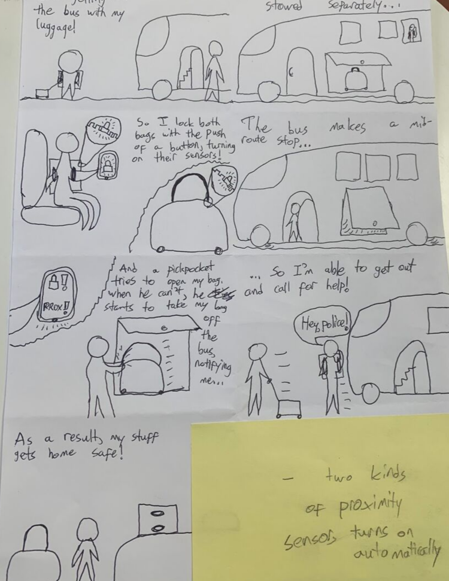
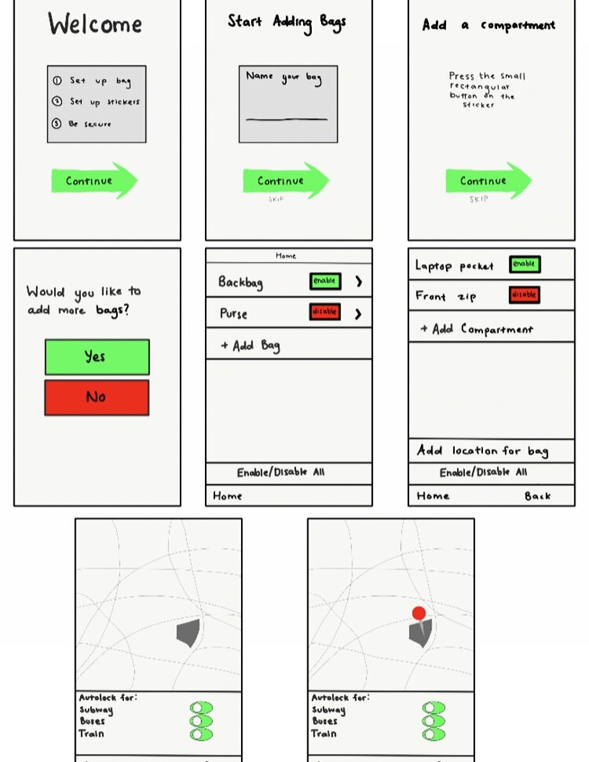
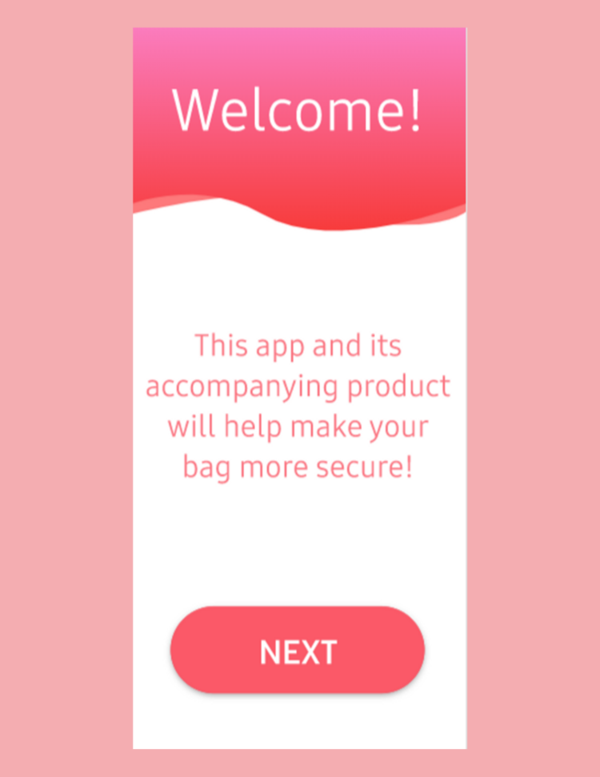
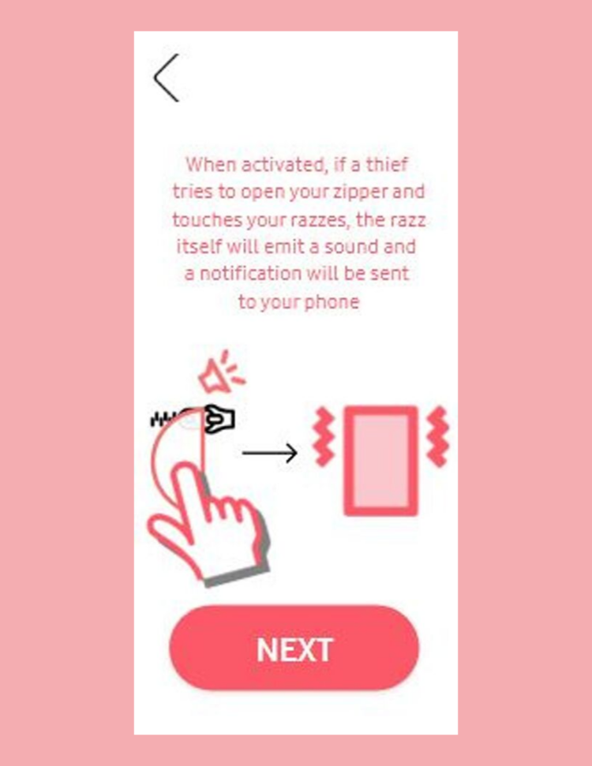
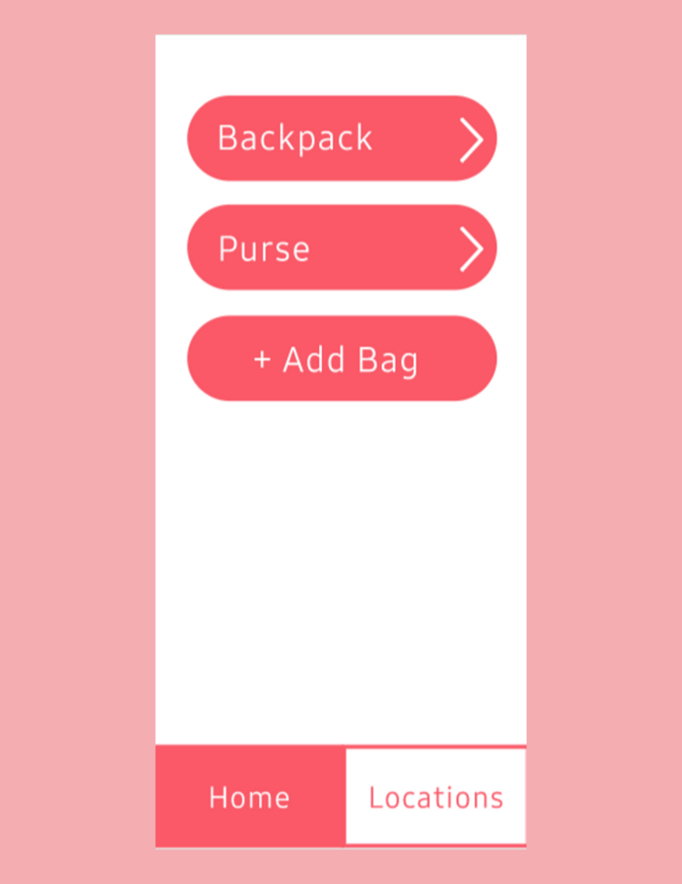
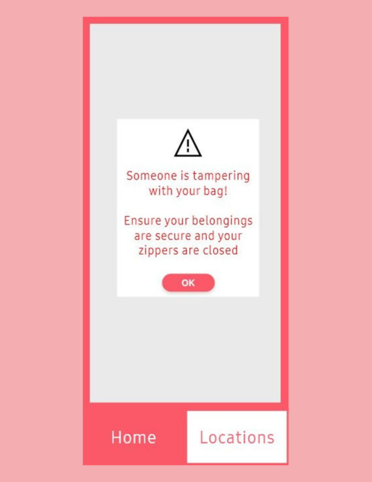

Razzmatazz






User Interface Design Project
May 2019 - July 2019
Last Summer, I studied abroad in Barcelona, Spain and was enrolled in a class called User Interface Design. Throughout this class I learned the user-centered design process and conducted:
- User Research
- Contextual Interviews
- Story Boarding
- Low Fidelity Prototyping
- Wire framing
- Functional Prototyping
I was tasked with figuring out a problem that pertains to international visitors in Barcelona and creating a solution for it.
Our idea: Barcelona is notoriously known for pick-pocketing issues, so our team decided to tackle a real issue that affected us on our commute to class.
Process:
- We first conducted a survey to analyze what types of stakeholders would be affected by our product
- We then conducted contextual interviews to understand what kinds of issues arose during the process of commuting and fears of pick-pocketing
- Our affinity model the interview interpretation sessions we had to visualize the most common design issues we could pursue
- The next step was to create visions of the product’s intended use and then story boarding common use cases.
- Initial low-fidelity prototypes were created and iterated using paper prototypes and evaluation with stakeholders
- I designed our first interactive prototype and wire-framed using Adobe Xd
- Lastly, we went through heuristic walkthroughs and usability testing to arrive at our final interactive prototype